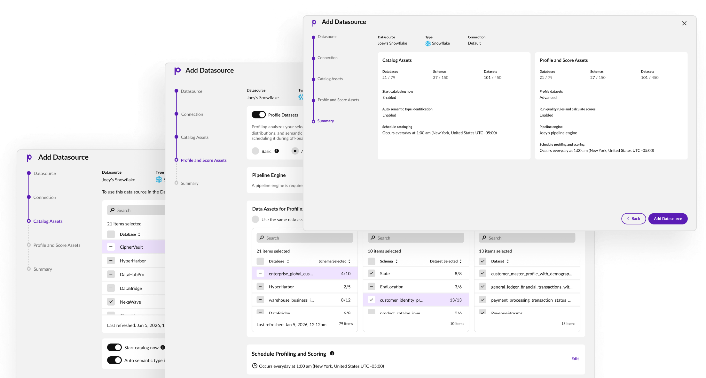

Connector configuration without hand-holding
Research-led redesign of a five-step data-configuration flow — replacing jargon and dead ends with a path data stewards could follow alone. Support tickets fell 50%.

Precisely is an enterprise data-integrity company and a recognized leader in the category. Its Data Integrity Suite is a modular set of cloud services for integrating, governing, and improving data at scale, used by thousands of large enterprises. The work below was for this suite.
The problem
Setting up a data source meant moving through a multi-step flow — source, credentials, catalog, profiling, scheduling — built on non-standard terminology the UI never explained. Scheduling, with its two schedulers, was the worst. Anyone who hadn't used it for years got stuck, and the confusion turned into support tickets.
The real problem
The flow had never been researched — every decision rested on the team's own product assumptions, never tested against a user. The friction wasn't one bad screen; nothing on screen told users what it was asking of them, or why. It also boxed them in: routine control over their own data assets — catalog rules, which datasets to profile and score, scheduling specifics, a closing summary — lived in a separate product, so finishing a connector meant detouring out to the Data Catalog to do it.
What I did
Ran the flow's first-ever user research. Scoped it, wrote the guide, recruited, and interviewed six support engineers chosen because they didn't know the flow — so the gaps would surface without veteran bias.
Synthesized and aligned. Analyzed in FigJam (and tested Copilot as an analysis aid), then walked design, product, and engineering through the findings to agree on what to build.
Designed three features as one flow. Translated the findings into three feature tickets and designed them in parallel as a single coherent experience, not three patches.
Brought control in-house. Gave users command over their own data assets inside the flow — catalog rules, dataset selection for profiling and scoring, scheduling options, and an end-of-flow summary — instead of forcing a detour to a separate product to get them.
Held the scope line. Kept it a connector-configuration flow — not a launchpad into other suite products — while reconciling overlapping, already-shipped work from the Data Quality team.
Made the case for UX analytics. Used the research to convince product and engineering to stand up proper UX measurement — heatmaps, funnels, event tracking — so future problems could surface in data before they needed a full research cycle.
Impact
50% drop in support tickets about understanding the flow — validated with fresh-eyes internal testing before launch.
The flow became self-service users could configure a source, including catalog, profiling, and scheduling controls that used to require a separate product, without hand-holding.
Set the first research baseline for a flow only ever designed on assumption — and got UX analytics onto the roadmap, so future problems surface in data first.
The hardest call
Late in the redesign, we found the Data Quality team had already shipped two overlapping features, with a third coming — surfaced only because cross-team communication, especially at the PM level, hadn't been happening. Absorbing them ballooned the scope. The hard judgment was refusing to let the flow sprawl: I pushed to keep it a clean connector-configuration experience rather than a maze of routes into the rest of the suite, even as the pressure to bolt everything on mounted.